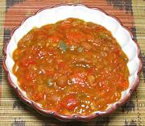

|
ChakalakaSouth Africa - Chakalaka | ||||
| Makes: Effort: Sched: DoAhead: |
2-1/2 cups ** 2 hrs Yes |
This is the definitive relish / sauce of South Africa, served with just about any meal. There are as many recipes as there are households, but most of them use a can of baked beans. | |||
| This recipe makes a lot less than would be made in the RSA, but we don't use it every day here. It goes particularly well as a spread for flavorful bread, and see Uses). | |||||
|
1 4 4 3 1 1/2 ----- 1/2 1 1/4 1/2 ----- 2 14 2 |
# oz oz oz in --- t t t t --- T oz t |
Tomatoes Onion Bell Pepper grn. Carrot Chili, fresh (1) Ginger root -- Spices Cumin Seed Coriander Seed Turmeric Salt --------- Oil can Baked Beans Piri-Piri Sauce (2) |
Prep - (20 min)
|